Our Work
Photographs of completed kitchens, bathrooms and custom furniture — built in our East Tāmaki workshop and installed in Auckland homes.
Completed Kitchens
Every kitchen below was designed, manufactured in our workshop and installed by our team. Click any image to view it larger.

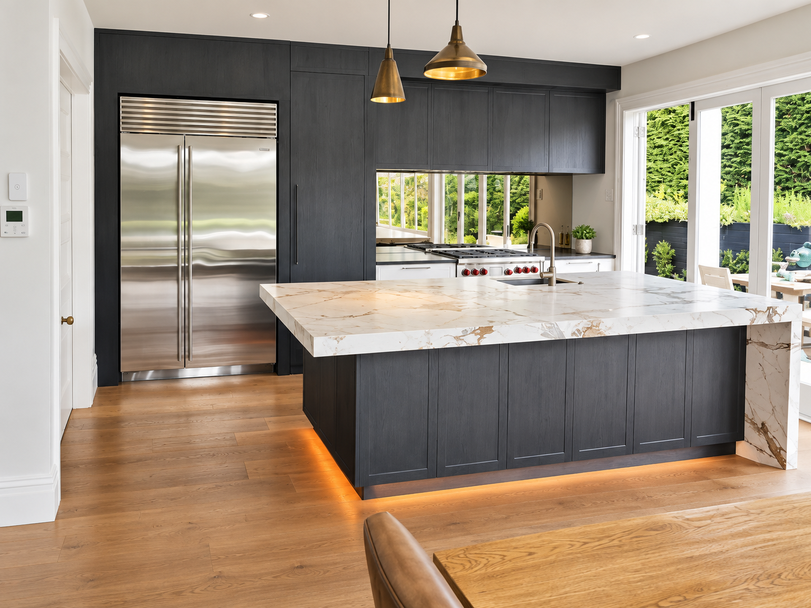
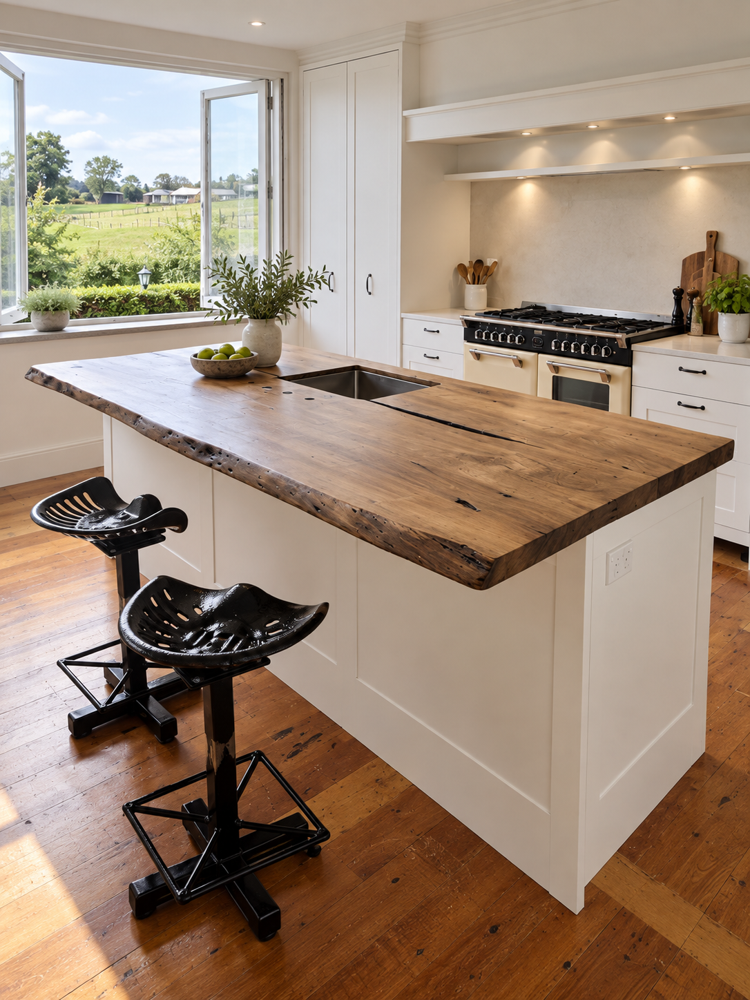


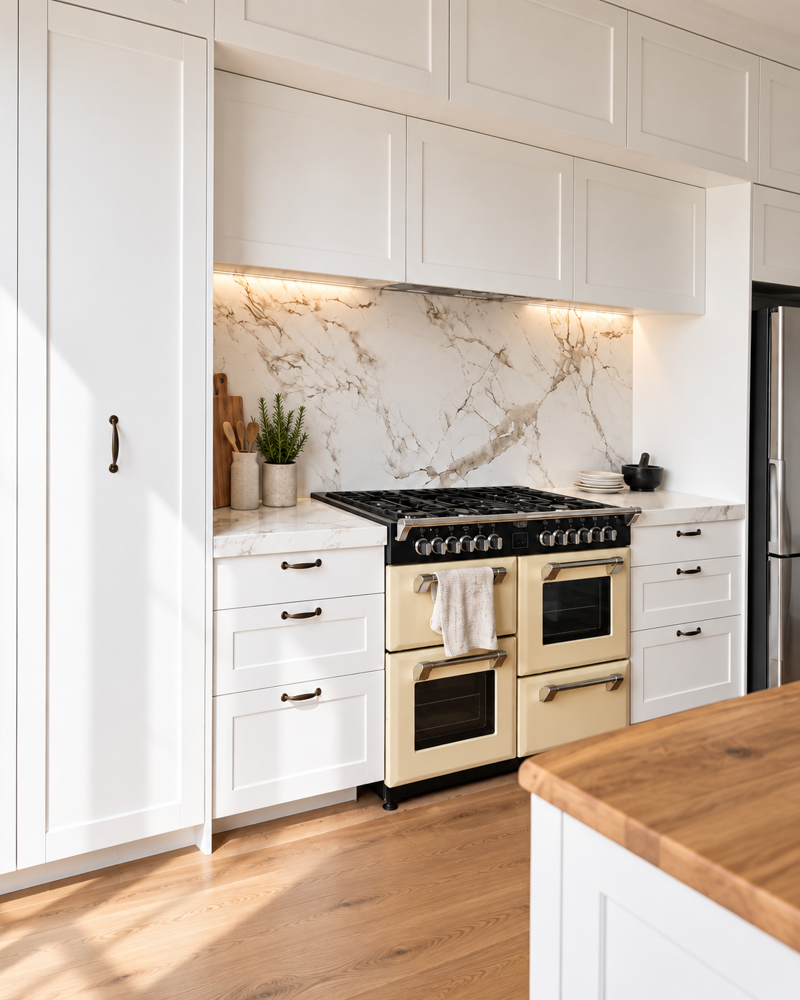
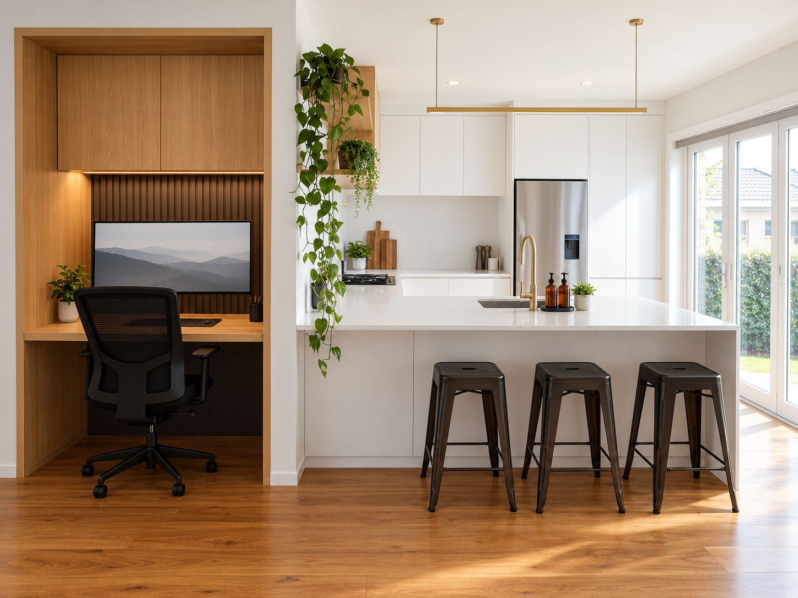
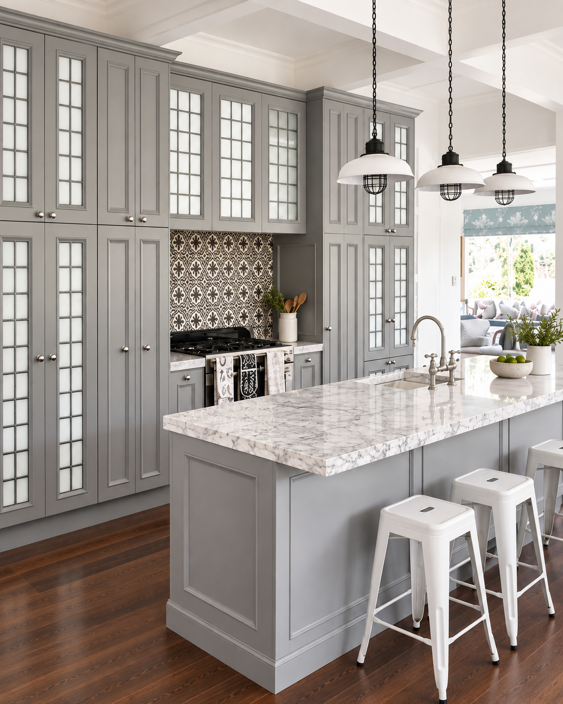
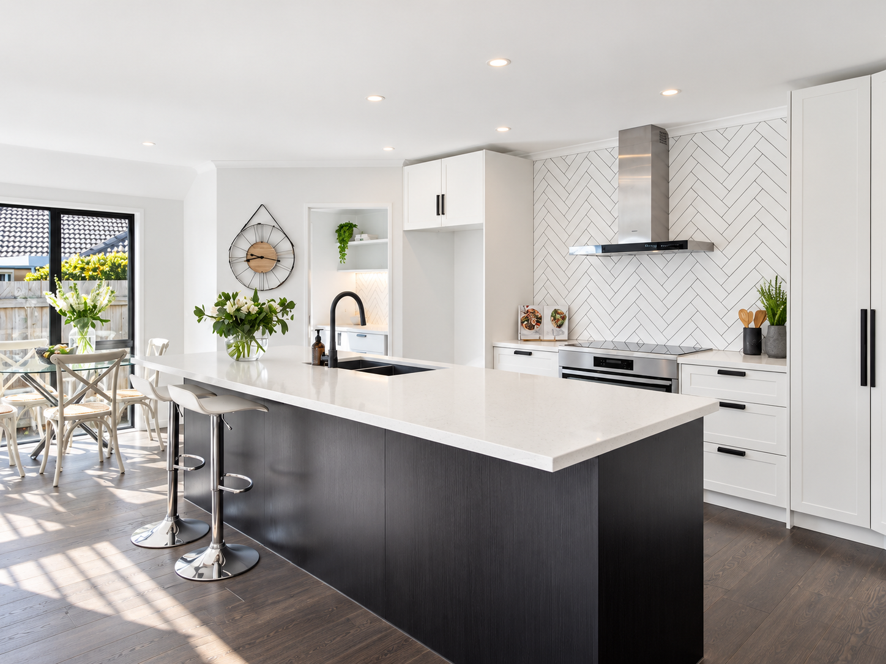
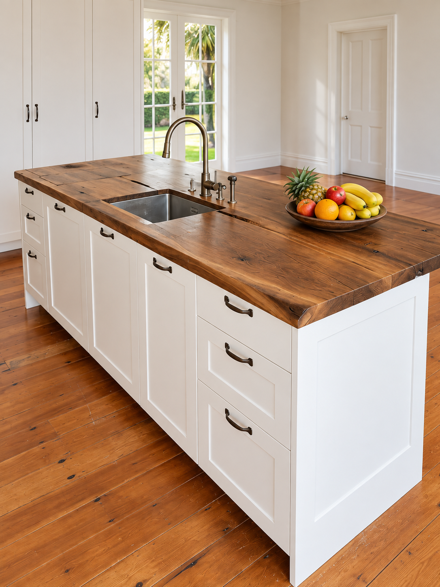


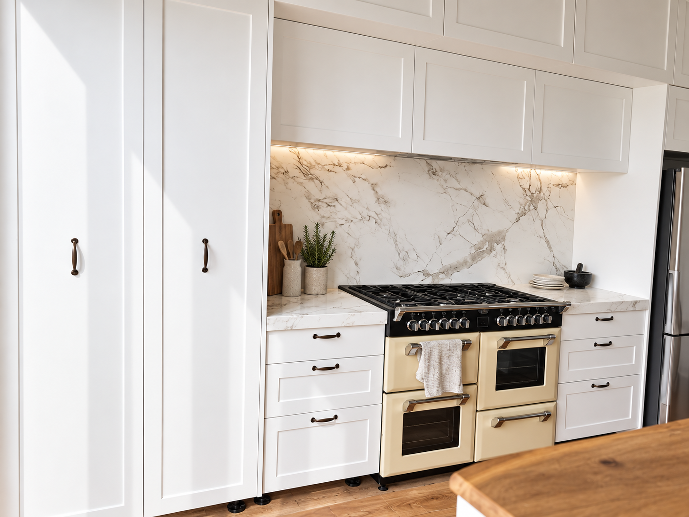


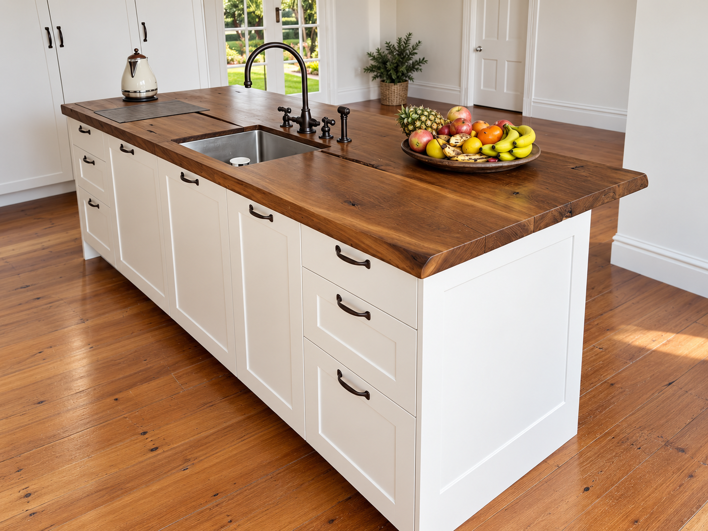


Completed Bathrooms
Custom vanities and bathroom cabinetry, designed and built in our workshop. Click any image to view it larger.
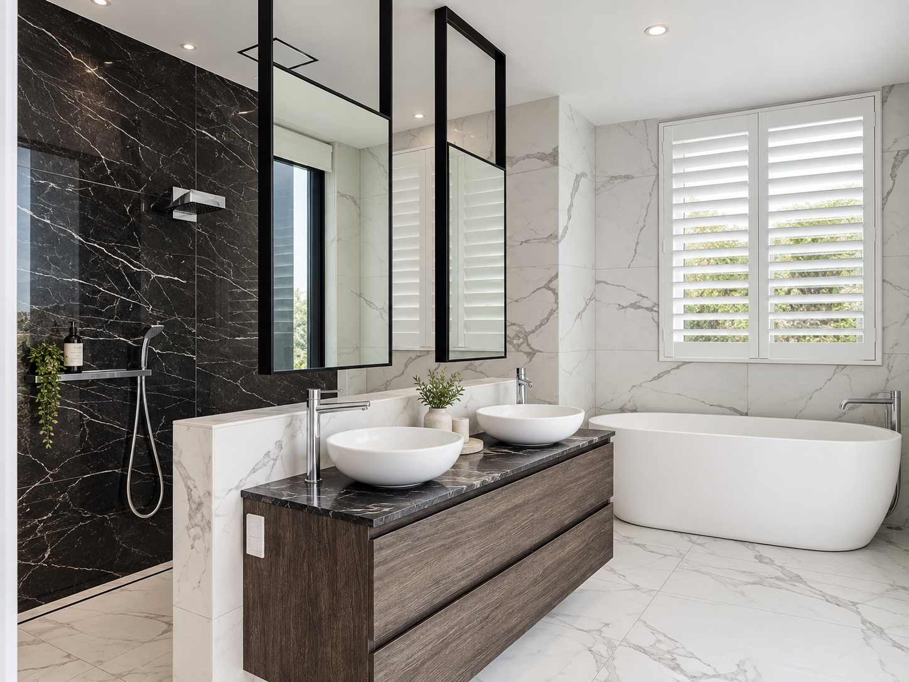
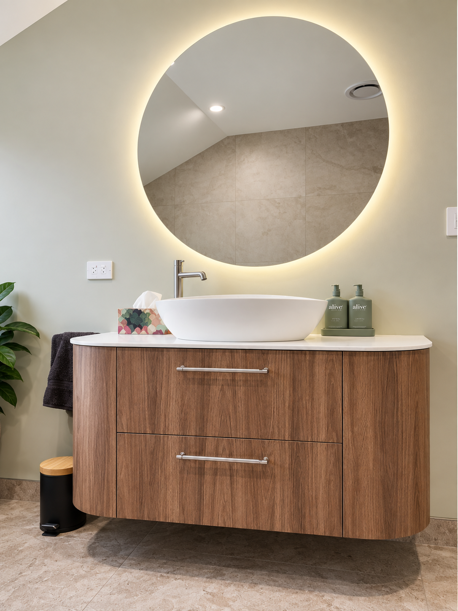

Custom Furniture & Joinery
Bespoke joinery for any room — from built-in libraries and bar units to commercial counters. All designed and built in our East Tāmaki workshop.
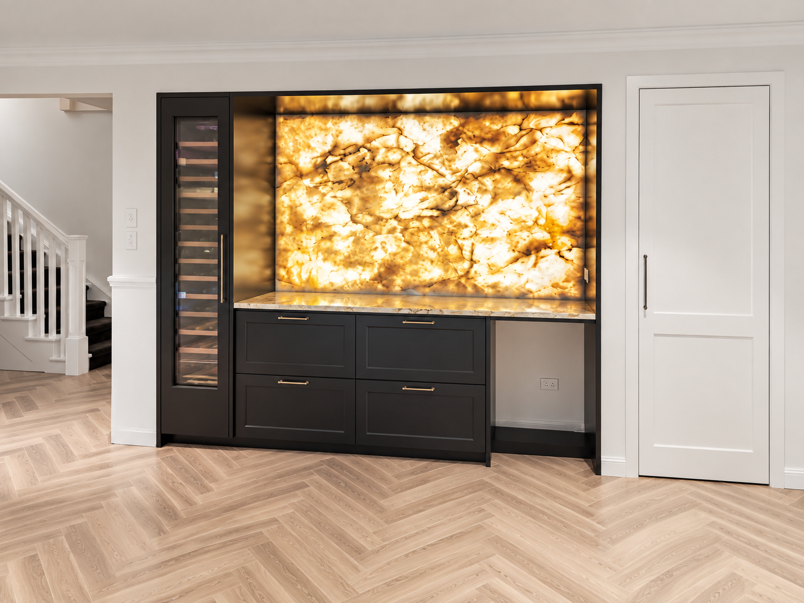
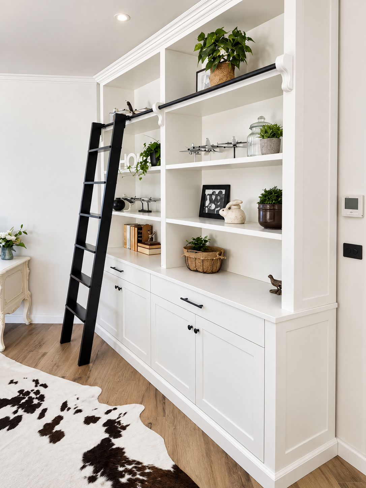
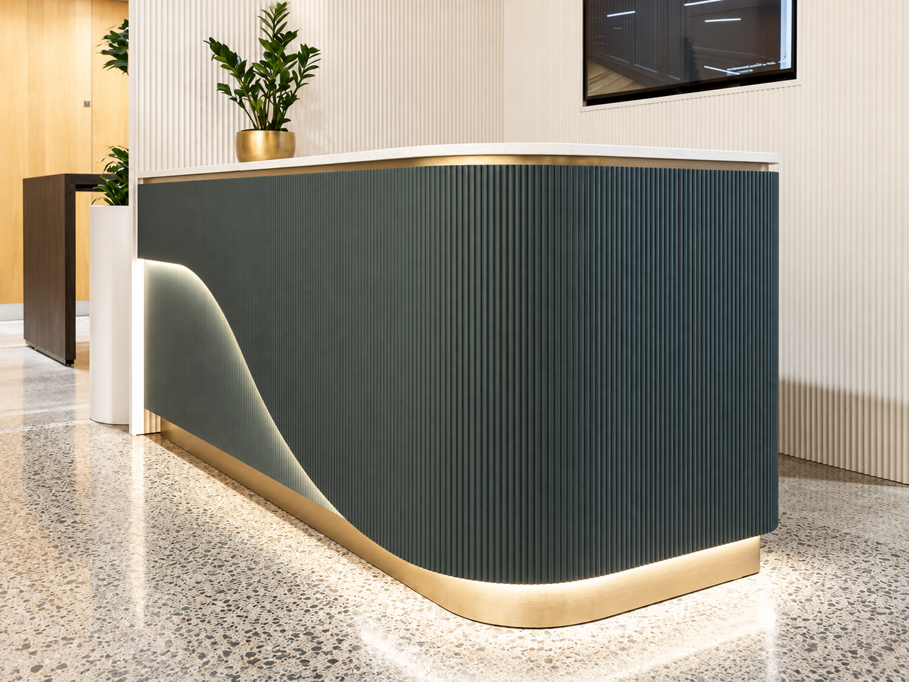
Seen something that inspires you?
Bring the idea to us and we'll design something around your kitchen and your brief. Every project starts with a conversation.